這篇教學從建立Windows Froms開始到建立一些控制項設定屬性等的基礎教學
簡介
Windows Forms是微軟的.NET開發框架的圖形用戶介面的一部分
使用 Windows Form 來開發智慧型用戶端。 「智慧型用戶端」是豐富的圖形化應用程式，容易部署及更新，無論是否連接至網際網路都能運作，而且在存取本機電腦上的資源時，所使用的方法比傳統的 Windows 應用程式更安全。
微軟在.Net 3.0中發行了支援影片加速的Windows Presentation Foundation（簡稱WPF）作為Windows Forms的替代版本，但是WPF並不能完全取代Windows Forms，很多時候仍需要和Windows Forms互操作。
建立Windows Forms應用程式
在功能表列上，選擇 [檔案] 、[新增] 、[專案] 。 對話方塊看起來會像這樣。
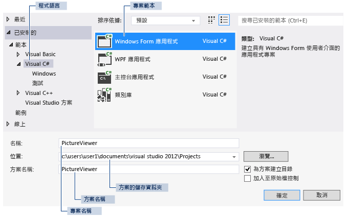
建立完之後VS視窗大概會有這樣的配置
主要有主視窗、方案總管和 [屬性] 視窗。
主視窗：您將在這個視窗中進行大部分的工作，例如，使用表單和編輯程式碼。 在圖中，視窗在 [表單編輯器] 中顯示表單。 視窗頂端會出現 [起始頁] 索引標籤和 [Form1.cs [Design]] 索引標籤 (在 Visual Basic 中，索引標籤名稱的結尾是 .vb，而不是 .cs)。
方案總管視窗：在這個視窗中，您可以檢視和巡覽至方案中的所有項目。 如果您選擇一個檔案，[屬性] 視窗的內容會隨著變更。 如果您開啟程式碼檔 (在 Visual C# 中結尾 .cs，在 Visual Basic 中則是 .vb)，程式碼檔或程式碼檔的設計工具隨即出現。 設計工具是一個視覺化介面，您可以將控制項 (例如按鈕和清單) 加入該介面中。 Visual Studio 表單的設計工具稱為 Windows Form 設計工具。
屬性視窗：在這個視窗中，您可以變更在其他視窗中所選擇項目的屬性。 例如，如果您選擇 Form1，可以設定 Text 屬性變更其標題，也可以設定 Backcolor 屬性變更背景色彩。
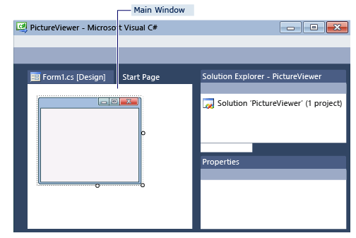
接著執行你的程式，有以下幾種方法
選擇 F5 鍵。
在功能表列上，選擇 [偵錯]、[開始偵錯]。
在工具列上選擇 [開始偵錯] 按鈕。
執行成功後應該就會看到一個空白的視窗程式
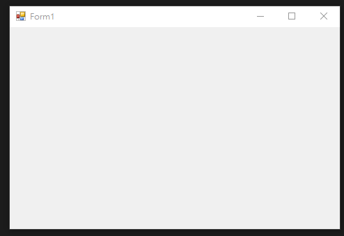
使用下列其中一種方法停止您的程式。
在工具列上選擇 [停止偵錯] 按鈕。
在功能表列上，選擇 [偵錯]、[停止偵錯]。
選擇 [Form1] 視窗右上角的 X 按鈕。
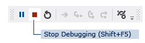
開發環境架構介紹
首先從你的設計畫面中點選Form，然後在右邊找到你的屬性視窗看起來應該如下圖
選取之後，在 [屬性] 視窗中尋找 [Text] 屬性 打上名稱，你的Form名稱就會改變
當拖曳Form邊邊角角的小方塊時可以調整大小，此時在屬性視窗的Size也會跟著改變，也可以直接在Size屬性直接填寫寬度高度
所以各個控制項基本上透過2個方法來設定
透過IDE的設計畫面或屬性視窗直接做設定
在.cs檔透過程式碼來改變設定
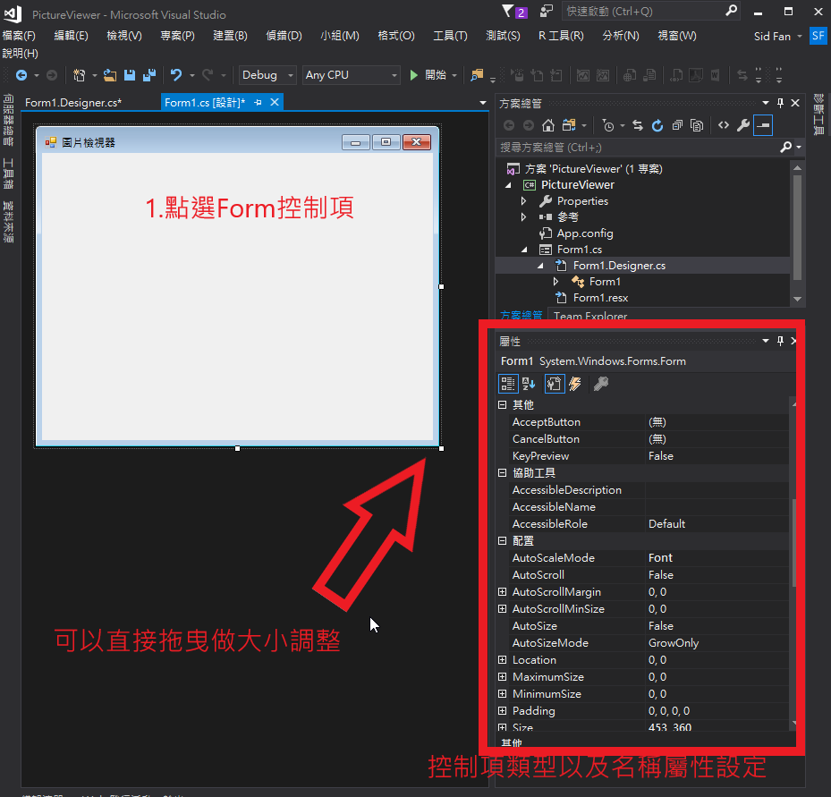
在方案總管可以看到目前我們的架構很簡單只有一個Form1跟Program.cs和App.config
- Form1 : Form元件，可以自行產生多個自訂的Form來交互使用
- Program.cs : 程式的進入點
- App.config : 程式的設定檔
一個Form包含兩個檔案.cs以及.Designer.cs，前者為程式邏輯撰寫的地方，後者為UI設計的程式碼
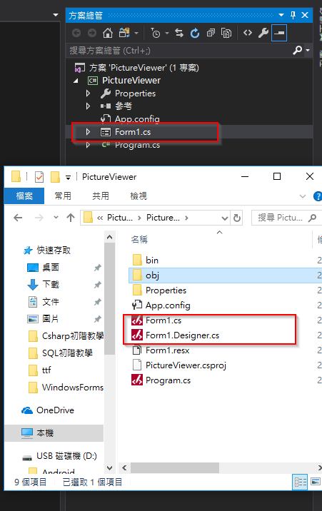
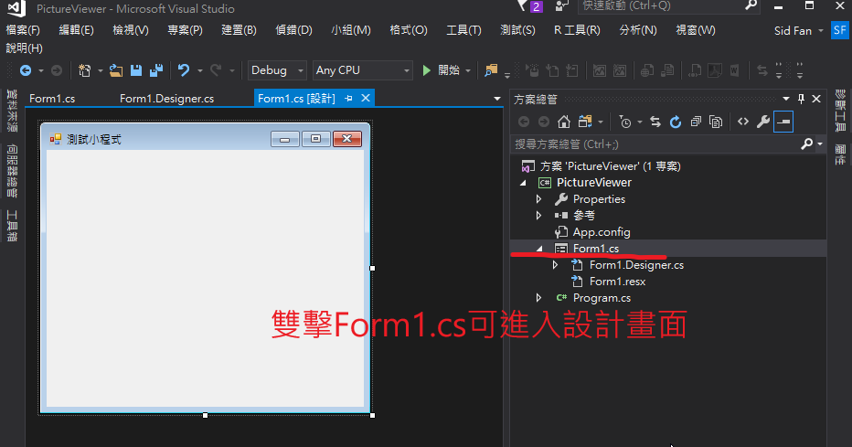
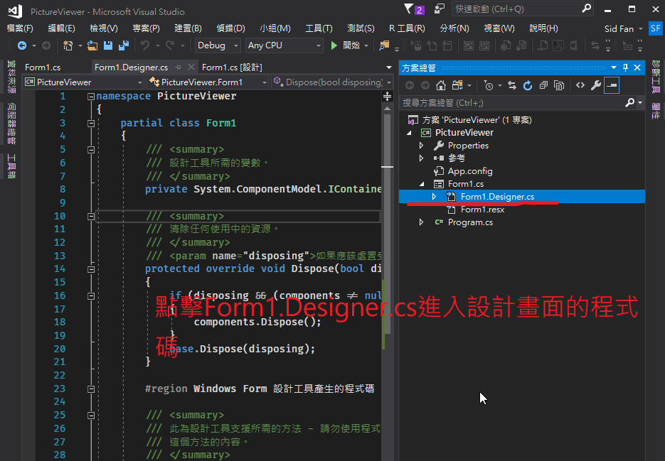
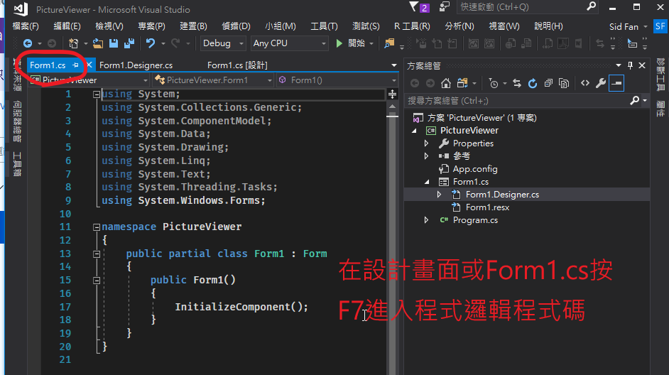
VS對於Winform開發提供了視覺化設計介面讓開發者可以直接對畫面做調整，不需要全部透過程式碼來實現。
VS左側可以找到工具箱，裡面提供許多.NET平台配件的UI控制項，也可以自行開發在工具箱引入讓其他開發人員使用。
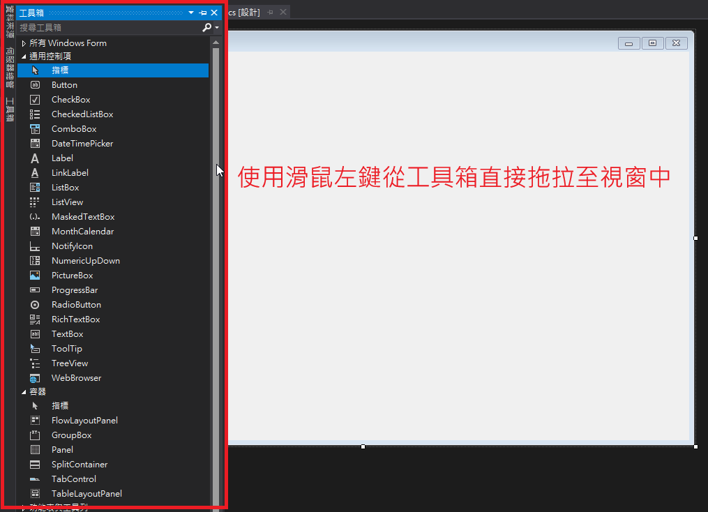
開發練習
現在簡單的做個練習，做一個小程式裡面有輸入框以及按鈕，讓使用者輸入文字然後產生在下面訊息視窗
建立表單Layout
首先從工具箱中找到TableLayoutPanel，拖曳到Form裡面，這是一個網格類型的排版控制項，可以幫助我們配置Form的版面
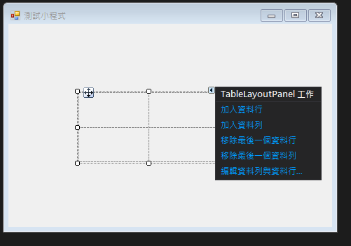
接著我們將TableLayoutPanel的Dock屬性設為Fill，讓他的大小跟隨著父容器縮放。
我們只需要兩列的配置，所以接下來將TableLayoutPanel的兩行兩列改為一行兩列
點選TableLayoutPanel然後控制項右上角會浮現一個小三角形符號，點選可以出現控制項的設置，這裡點擊編輯資料列與資料行，參考下方設定。
將Column刪掉一個，並將剩餘的一個大小設為100%
將第一個Row大小改為絕對並設為50px，第二個Row設為100%
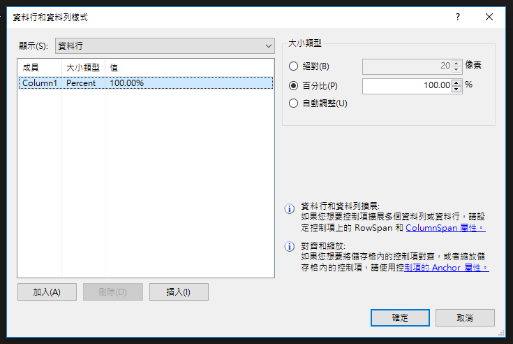
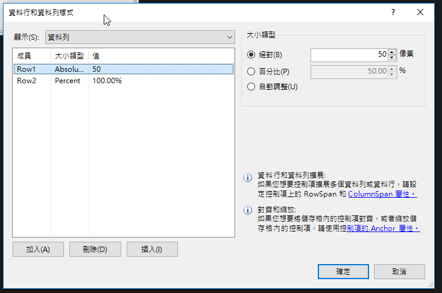
加入控制項
TableLayoutPanel裡面一個空間只能容許放入一個控制項，所以需要加入Panel讓我們可以放多個控制項在裡面
控制項的關係就會變成TableLayoutPanel=> Panel => Controls
- 將Panel加入到第一個Row
- 將Panel的Dock設為Fill
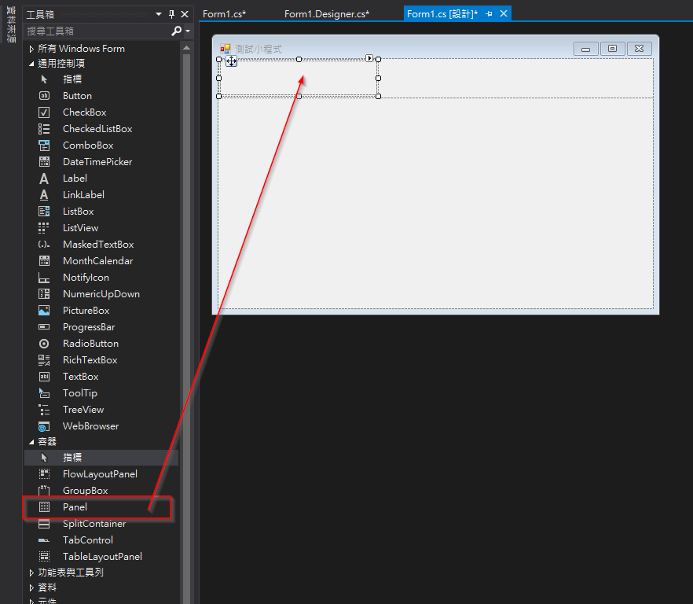
在來我們需要一個輸入框以及按鈕
- 將TextBox加入Panel
- 將Button加入Panel
- 直接在設計畫面中調整大小以及為置
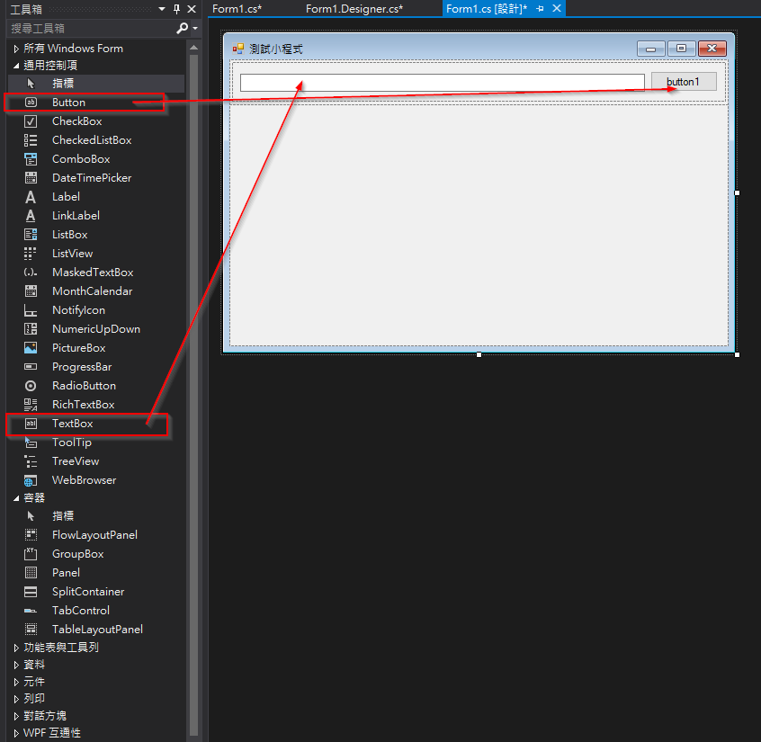
接著我們對這兩個控制項做一些設定
- TextBox的(Name)取為inputTextBox
- TextBox的Anchor設為 Top, Left, Right
- Button的(Name)取為sendMessageButton
- Button的Text設為送出
- Button的Anchor設為 Right
最後我們在加入一個新的TextBox到第二條Row，一樣做一些設定
- (Name)取為messageTextBox
- Multiline設為True (讓textbox可以輸入多行文字)
- Dock設為Fill
- ReadOnly設為True (讓textbox只能看不能編輯)
最後執行你的程式，外觀應該會大約是這個樣子
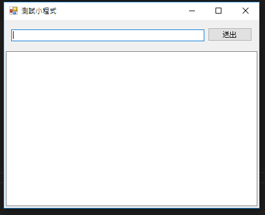
程式邏輯以及事件
接下來我們就要在Form中加入一些程式碼以及事件
首先我們要為送出的按鈕加入點擊的事件，讓送出按鈕被點擊時可以觸發我們的程式碼
控制項基本上都會附有許多的event，讓使用者在程式互動時可以傳出event，而開發者就可以程式碼寫在event裡，控制被觸發時要執行甚麼動作
有兩種方法可以讓程式碼自動產生Button的點擊事件
- 在設計畫面直接雙擊Button，就會自動預設產生Click事件
- 點擊Button在屬性視窗裡點事件分頁的選項找到Click事件在右邊空白的設定雙擊
事件分頁裡的事件設定可以選擇程式碼中已經寫好的方法，或著雙擊由系統自動產生
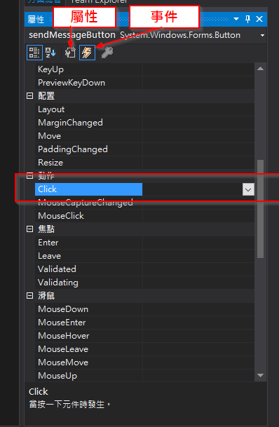
產生事件後你應該會看到Form1.cs中自動加入了下列程式碼
方法中的sender 和 e 參數為事件回傳參數，由事件發起者傳入
private void sendMessageButton_Click(object sender, EventArgs e)
{
}
可以在Click的方法中加入 MessageBox.Show("Botton is clicked"); 執行程式然後點擊送出按鈕來測試一下是否有成功的觸發事件
以上簡單的操作就可以快速產生一個送出按鈕被點擊的事件
private void sendMessageButton_Click(object sender, EventArgs e)
{
//取得輸入的文字
var input = this.inputTextBox.Text;
if (string.IsNullOrWhiteSpace(input)) //如果沒輸入名字出現提示訊息
{
MessageBox.Show("Input is null!");
}
else //有輸入將訊息傳至messageTextBox
{
this.messageTextBox.Text += $"{DateTime.Now:yyyy/MM/dd HH:mm:ss} : {input} {Environment.NewLine}";
}
}
程式執行結果
當在文字輸入框輸入文字後點送出按鈕會將輸入內容加至下方訊息框
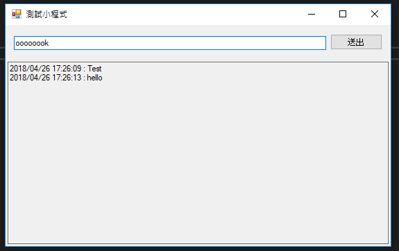
Oracle 資料庫連線
現在示範如何跟Oracle資料庫連線，以往.NET平台與Oracle的連線設定常常會遇到一些相容問題，就是大家常用的Oracle.DataAccess(ODP.NET)。
Oracle近年有提供新的連線工具 Managed ODP.NET，讓.Net平台輕鬆可以與Oracle連線，不用安裝Oracle Client，還可以使用Entity。
================
第一步我們要在專案中加入Oracle.ManagedDataAccess，首先在方案總管的專案上按右鍵選擇管理Nuget套件
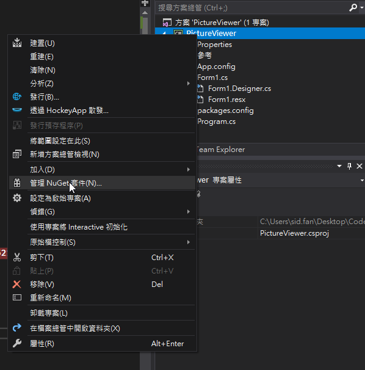
接著切到瀏覽畫面然後在搜尋列輸入oracle找到Oracle.ManagedDataAccess選擇安裝，此時就完成加入專案
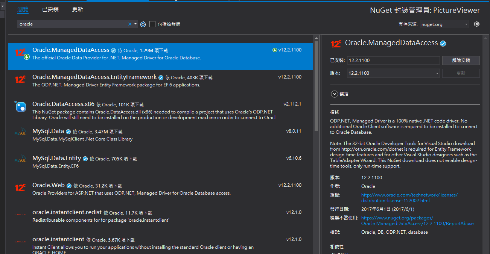
接著參考下列與法與資料庫連線取得資料
//連線字串，主要修改幾個地方 HOST=你的資料庫IP PORT=你的資料庫TCP通道 然後填入SID USER ID PASSWORD
string connectionString = "DATA SOURCE=(DESCRIPTION=(ADDRESS_LIST=(ADDRESS=(PROTOCOL=TCP)(HOST=192.168.1.13)(PORT=1521)))(CONNECT_DATA=(SID = yms)))PERSIST SECURITY INFO=True;USER ID=yms;PASSWORD=admin;";
//:GROUPNAME 代表參數從Parameters傳入，參數名稱GROUPNAME，這種作法可防止SQL Injection(資料隱碼攻擊)
string sqlCommand = "SELECT GROUP_NAME,SRC_TABLE_NAME,TRG_TABLE_NAME FROM XDM_TABLE_REP_CFG " +
"WHERE GROUP_NAME=:GROUPNAME";
//建立連線
using (OracleConnection conn = new OracleConnection(connectionString))
{
if (conn.State == ConnectionState.Closed)
{
conn.Open();
}
//建立SQL Command
OracleCommand cmd = new OracleCommand(sqlCommand, conn);
//BindByName預設為false，SQL會依照順序代入參數
//若設為true時，則依參數名稱代入參數
cmd.BindByName = true;
//加入參數
cmd.Parameters.Clear();
cmd.Parameters.Add("GROUPNAME", "ARYODS");
//執行Select Command
OracleDataAdapter DataAdapter = new OracleDataAdapter();
DataAdapter.SelectCommand = cmd;
//將資料存入DataTable
DataTable dt = new DataTable();
DataAdapter.Fill(dt);
}